From
Tabular Q-Learning
to
DQN

Outline
- Tabular Q-Learning
- RL as a regression problem (Fitted Q Iteration)
- From FQI to Deep Q-Network (DQN)
Value Functions
How good is it to be in this state?


Win: 1.0 | Draw: 0.5 | Lose: 0.0
Depends on the state
Depends on the policy
Source: Freek Stulp - Master AIC
Action-Value Function: Q-Value
What if we have no model?
Solution: $Q_\pi(s, a)$ instead of $V_\pi(s)$
\[\begin{aligned}
Q_\pi(s, a) = \mathop{\mathbb{E}}[r_t + \gamma r_{t+1} + \gamma^2 r_{t+2} + ... | s_t=s, a_t=a].
\end{aligned} \]
\[\begin{aligned} \pi(s) = \argmax_{a \in A} Q_\pi(s, a) \end{aligned} \]
Tabular Q-Learning: Discrete States

Tabular Q-Learning: Q-values
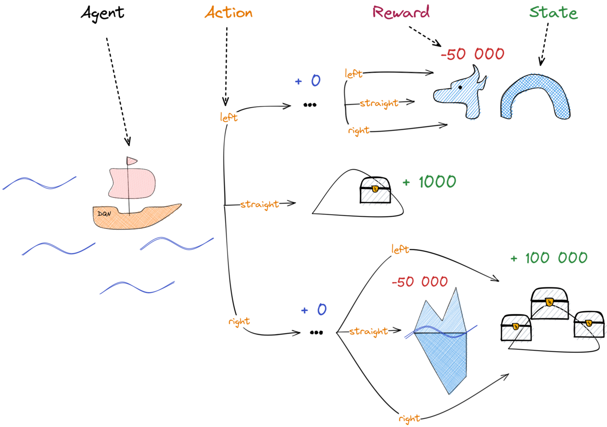
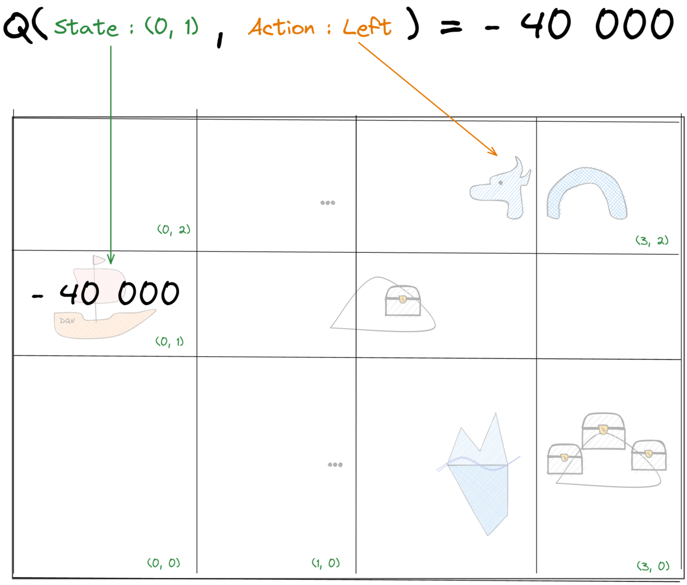
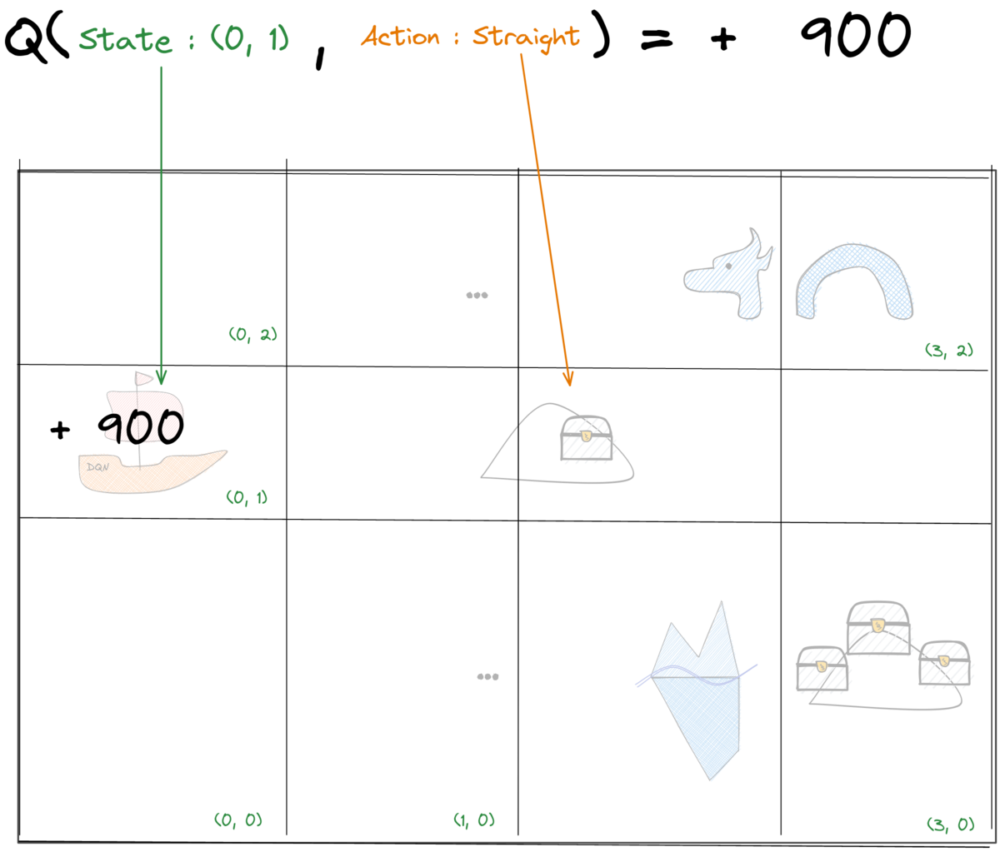
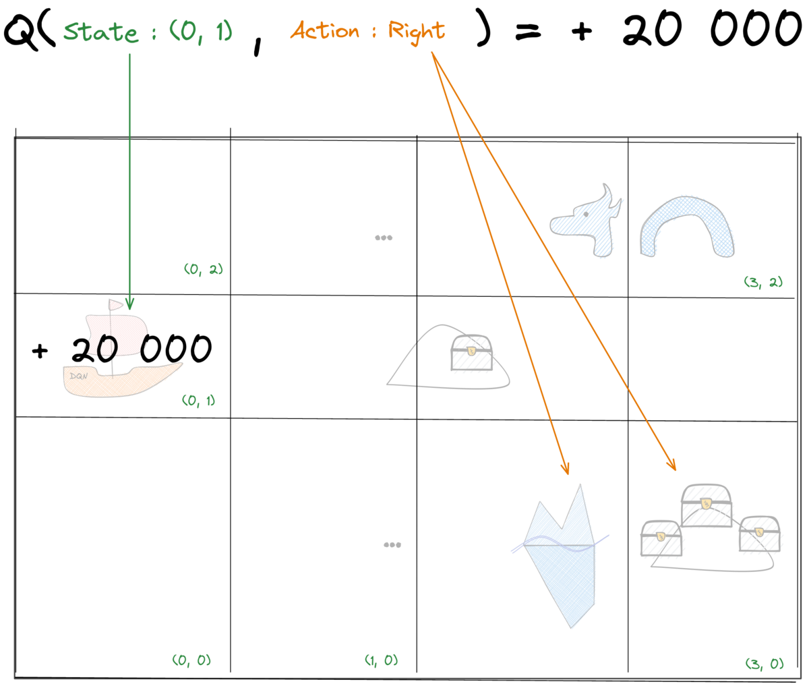
Tabular Q-Learning: Update rule
Bellman equation for optimal value function:
\[\begin{aligned}
\textcolor{#1864ab}{Q^*(s_t, a_t)} = \mathop{\mathbb{E}}[\textcolor{#a61e4d}{r(s_t, a_t) + \gamma \max_{a'} Q^*(s_{t+1},a')}].
\end{aligned} \]
Q-learning update rule
\[\begin{aligned}
\textcolor{#1864ab}{Q^n(s_t, a_t)} \gets \textcolor{#1864ab}{Q^{n-1}(s_t, a_t)} + \alpha \cdot (\textcolor{#a61e4d}{r_t + \gamma \cdot \max_{a'} Q^{n-1}(s_{t+1}, a')} - \textcolor{#1864ab}{Q^{n-1}(s_t, a_t)})
\end{aligned} \]
Tabular Q-Learning: Update explained
$\alpha=1$ (learning rate)
\[\begin{aligned}
\textcolor{#1864ab}{Q(s_t, a_t)} = \textcolor{#a61e4d}{r_t + \gamma \cdot \max_{a'} Q(s_{t+1}, a')}
\end{aligned} \]

Reminder

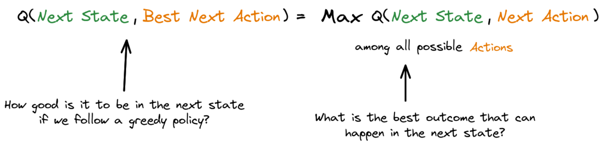
Tabular Q-Learning: Terminal State
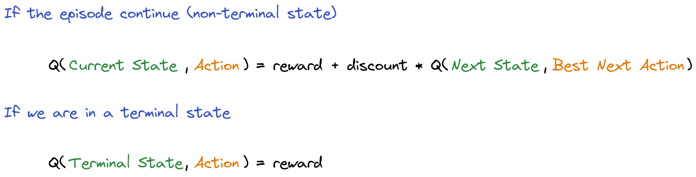Tabular Q-Learning: Limitations
- Discrete states
- No generalization (lookup table)
- Discrete actions
How to go beyond tabular Q-Learning?
 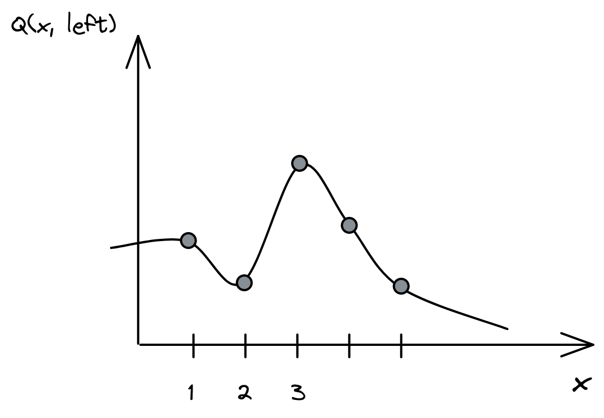
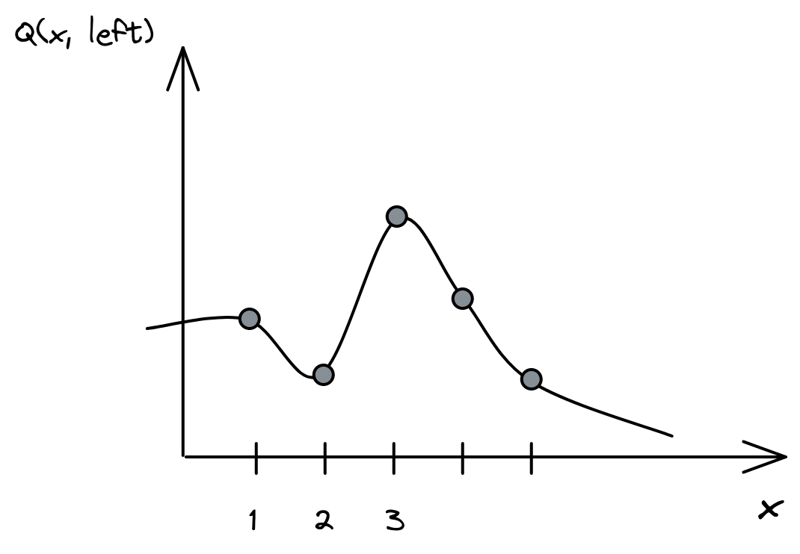
Q-Value Estimator
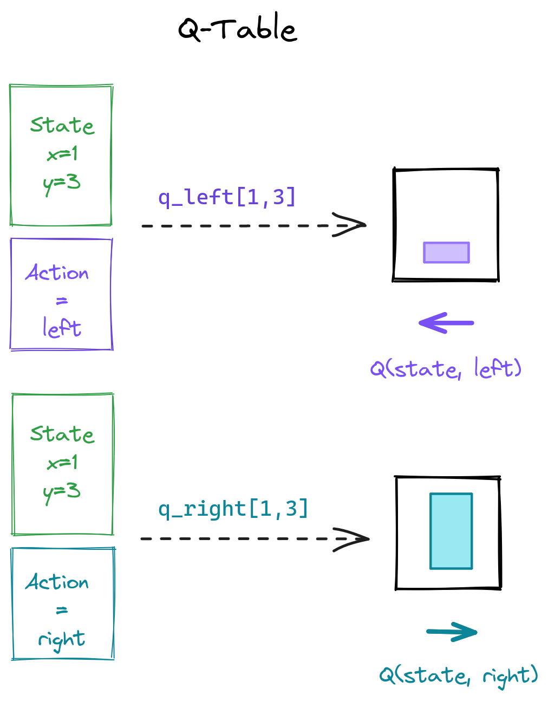

Q-Learning Regression (1/2)

\[\begin{aligned}
\textcolor{#1864ab}{Q_{\textcolor{black}{\theta}}(s_t, a_t)} = \textcolor{#a61e4d}{r_t + \gamma \cdot \max_{a' \in A}(Q_{\textcolor{black}{\theta}}(s_{t+1}, a'))}
\end{aligned} \]
\[\begin{aligned}
\textcolor{#1864ab}{f_{\textcolor{black}{\theta}}(x)} = \textcolor{#a61e4d}{y}
\end{aligned} \]
$\theta$: parameters of the estimator
Fitted Q-Iteration
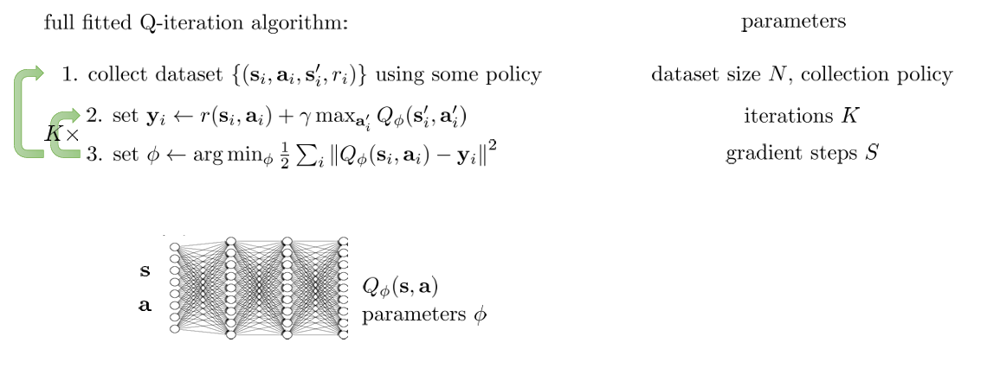Fitted Q-Iteration (code)
initial_targets = rewards
# Initial Q-value estimate
qf_input = np.concatenate((states, actions))
qf_model.fit(qf_input, initial_targets)
for _ in range(N_ITERATIONS):
# Re-use Q-value model from previous iteration
# to create the next targets
next_q_values = get_max_q_values(qf_model, next_states)
# Non-terminal states target
targets[non_terminal_states] = rewards + gamma * next_q_values
# Special case for terminal states
targets[terminal_states] = rewards
# Update Q-value estimate
qf_model.fit(qf_input, targets)
FQI in practice - Task
FQI Limitations
- Offline RL
- Loop over all possible actions $A$ to get next best action $\textcolor{#a61e4d}{a'}$: \[\begin{aligned} \max_{\textcolor{#a61e4d}{a' \in A}} Q_\theta(s_{t+1}, \textcolor{#a61e4d}{a'}) \end{aligned} \]
- Instability (target depends on $Q^{n-1}_\theta(s_{t+1}, a')$)
From FQI to DQN
- Offline RL → Online RL
- Loop over actions → One forward pass to get all $Q_\theta(s, a)$
- Instability → Target Network $Q_{\textcolor{green}{\theta'}}(s, a)$
Deep Q-Network (DQN)

Q-network

Online Q iteration

Online Q iteration

Replay Buffer

Replay Buffer Sampling

Collecting Experience
# Retrieve q values for the current observation
q_values = q_model(current_obs)
# Follow greedy-policy:
# take the action with the highest q_value
action = np.argmax(q_values)
# Do one step in the env
next_obs, reward, terminated, _, _ = env.step(action)
# Store transition in the replay buffer
replay_buffer.store(obs, action, reward, terminated, next_obs)
Target Q-Network

DQN Overview

DQN Overview

Backup Slides
Improving DQN
- Double DQN
- Multi-step returns
- DQN with Continuous Actions - DDPG, Twin Delayed DDPG
Practical Tips
- DQN takes some care to stabilize
- Large replay buffers help improve stability
- Start with high exploration (epsilon) and gradually reduce
- Bellman error gradients can be big; clip gradients or use Huber loss
- Double DQN helps a lot in practice
- Adam optimizer
Exploration / Exploitation

Epsilon-greedy Exploration
# Flip a biased coin
take_random_action = np.random.rand() < exploration_rate
if take_random_action:
# Random action
action = action_space.sample()
else:
# Greedy action
action = np.argmax(q_values)
Exploration Schedule

Annotated DQN Algorithm


Regression 101
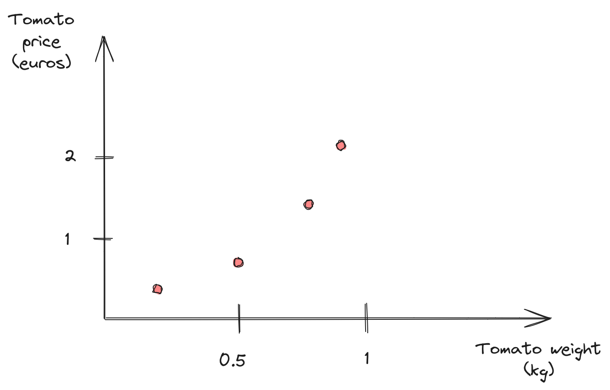Linear model

Linear model(s)?
\[\begin{aligned}
\textcolor{#a61e4d}{y} = \textcolor{#1864ab}{f_\theta(x)} \quad ; \quad
\theta = \{\text{slope}, \text{bias}\}
\end{aligned} \]

Non Linear Model

Scikit-Learn API
import numpy as np
from sklearn.linear_model import LinearRegression
# Generate some data (noisy linear function)
x = np.linspace(0, 5, num=50).reshape(50, 1)
y = 2 * x + 10 + 0.1 * np.random.rand()
# Fit a linear model using least squares
model = LinearRegression().fit(x, y)
y_predict = model.predict(x)
# Retrieve the optimized parameters
slope, bias = model.coef_, model.intercept_
Stable-Baselines3 (SB3)
from stable_baselines3 import DQN
# SAC, TD3, TQC are all successors of DQN
from stable_baselines3 import SAC, TD3
from sb3_contrib import TQC
# Instantiate the algorithm on the Lunar Lander env
model = DQN("MlpPolicy", "LunarLander-v2", verbose=1)
# Train for 100 000 steps
model.learn(100_000, progress_bar=True)